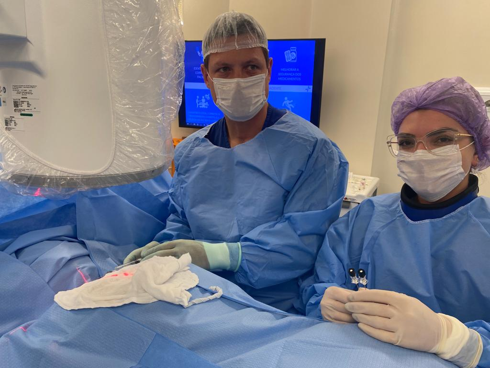
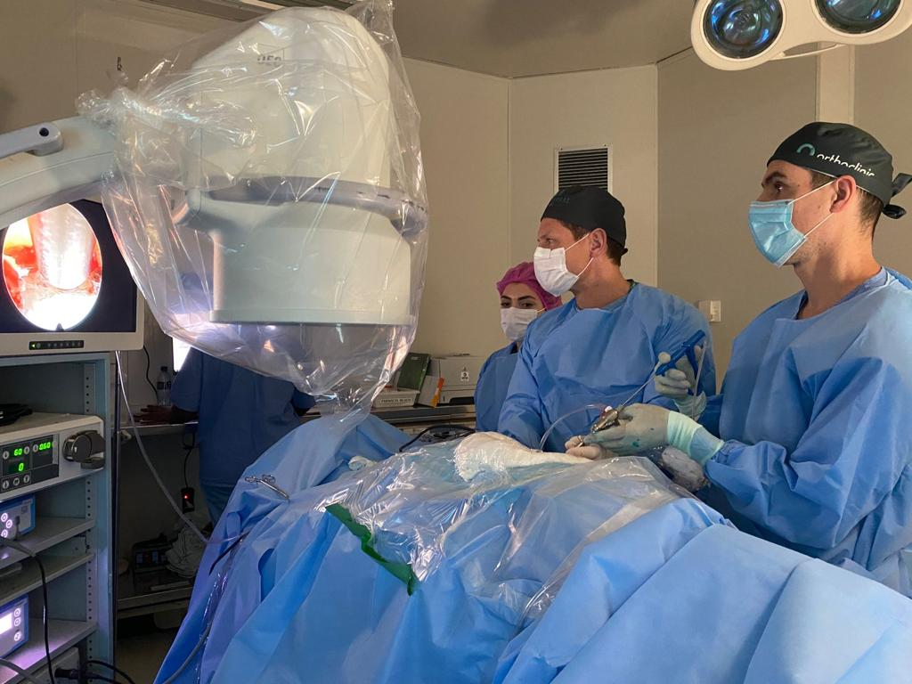

Em resumo
- A dor ciática costuma ser causada por uma hérnia de disco que comprime um nervo.
- A maioria dos casos melhora com tratamento conservador em algumas semanas.
- A cirurgia é considerada quando a dor persiste ou há perda de força.
- Quando indicada, a cirurgia endoscópica trata a hérnia por uma incisão de cerca de 1 cm.
Hérnia de disco
O que é hérnia de disco
Entre uma vértebra e outra existe um disco que funciona como amortecedor. Ele tem um centro gelatinoso, o núcleo, envolvido por um anel fibroso resistente. A hérnia acontece quando parte do núcleo atravessa esse anel e passa a ocupar o espaço dos nervos.
Quando o disco só está abaulado, sem ruptura do anel, fala-se em protrusão discal. Quando o material do núcleo sai, fala-se em extrusão. As hérnias são mais comuns na coluna lombar e na cervical.
Sintomas
- Dor na lombar que desce para a nádega e a perna, a chamada dor ciática.
- Dor no pescoço que irradia para o ombro e o braço, nas hérnias cervicais.
- Formigamento ou dormência no trajeto do nervo.
- Perda de força na perna, no pé, no braço ou na mão.
Muitas pessoas têm hérnia na ressonância e não sentem nada. O que importa é a combinação entre os sintomas, o exame físico e a imagem.
Procure uma emergência se houver perda súbita de força nas pernas, dormência na região íntima ou dificuldade para controlar a urina ou as fezes.
Como é feito o diagnóstico
O diagnóstico começa na consulta, com a história e o exame físico, que avalia força, sensibilidade e reflexos. A ressonância magnética é o exame que mostra o disco e os nervos e confirma o nível e o tamanho da hérnia.
Tratamento sem cirurgia
É o primeiro caminho na grande maioria dos casos. Inclui medicação para dor e inflamação, fisioterapia e orientações sobre atividade. Em muitas pessoas, o próprio organismo reabsorve parte da hérnia ao longo de semanas a meses.
Quando a dor é intensa e limita a reabilitação, um bloqueio da raiz nervosa pode reduzir a inflamação e trazer alívio.

Quando a cirurgia é indicada
- Dor que não melhora depois de semanas de tratamento bem feito.
- Perda de força que progride.
- Sinais de compressão grave dos nervos, como alteração do controle da urina ou das fezes, que exigem atendimento de urgência.
Nesses casos, a cirurgia endoscópica da coluna permite retirar o fragmento de disco por uma incisão de cerca de 1 cm. Em protrusões contidas, a discectomia percutânea pode ser uma opção. Nas hérnias cervicais, a artroplastia cervical é uma das alternativas.
Dor ciática
O que é a dor ciática
O nervo ciático é formado por raízes que saem da parte baixa da coluna e descem pela nádega e pela perna até o pé. Quando uma dessas raízes é comprimida ou inflamada, a dor segue o trajeto do nervo. Por isso a ciática é sentida na perna, embora o problema esteja na coluna.
Sintomas
- Dor em choque, queimação ou fisgada que desce pela nádega, pela parte de trás ou de lado da coxa e pela perna.
- Formigamento ou dormência na perna ou no pé.
- Piora ao tossir, espirrar ou ficar muito tempo sentado.
- Em alguns casos, fraqueza para levantar a ponta do pé ou ficar na ponta dos pés.
Procure uma emergência se houver perda súbita de força nas pernas, dormência na região íntima ou dificuldade para controlar a urina ou as fezes.
Causas
- Hérnia de disco lombar, a mais frequente.
- Estenose do canal lombar, mais comum depois dos 60 anos.
- Espondilolistese, o escorregamento de uma vértebra.
Diagnóstico
O exame físico identifica qual raiz está afetada, testando força, sensibilidade e reflexos. A ressonância magnética da coluna lombar mostra a causa da compressão. Nem toda dor na perna é ciática: problemas de quadril e de músculos podem causar sintomas parecidos, e a consulta serve para diferenciar.
Tratamento
Na maioria das vezes o tratamento é clínico: medicação, fisioterapia e manter-se ativo dentro do limite da dor. Quando a dor é muito intensa, um bloqueio da raiz nervosa pode reduzir a inflamação.
Se a dor persiste depois de semanas de tratamento, ou se há perda de força, pode ser indicada uma cirurgia para descomprimir o nervo. Quando a causa é uma hérnia de disco, a cirurgia endoscópica é uma das opções.
